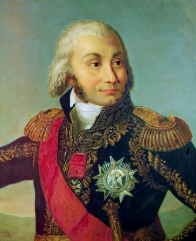
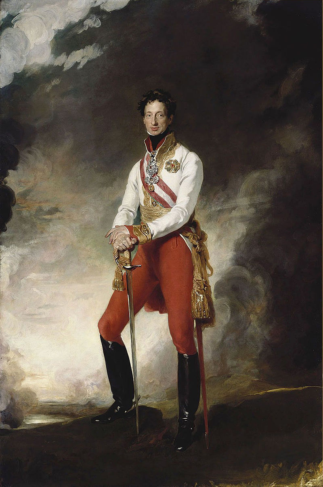
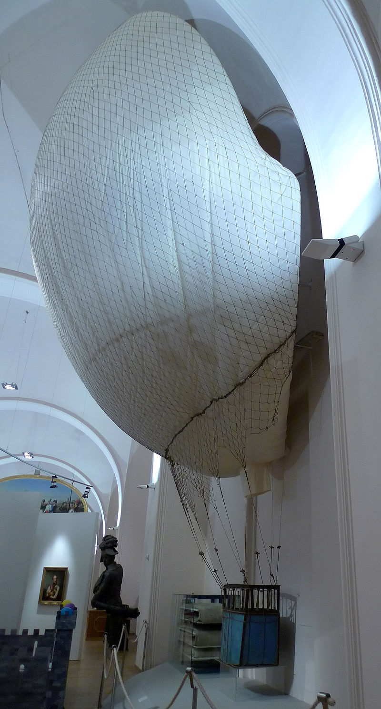
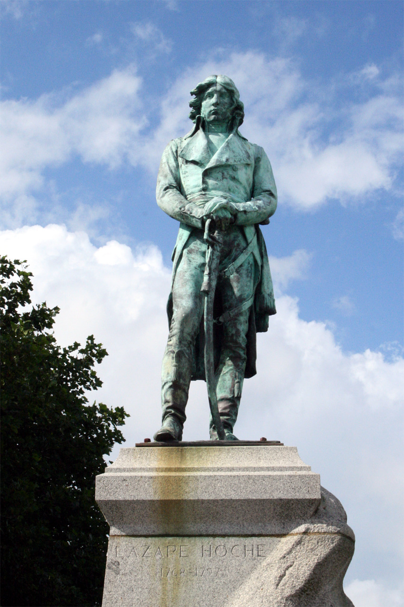

참패와 재기 - 나폴레옹과 프랑스 공군 이야기 (제3편)
게시: 2018-04-22T18:53:24+09:00
프랑스 기구 중대의 역사적 시작이 주르당과 함께였던 것처럼, 그 몰락의 시작에도 주르당이 있었습니다.

(주르당 원수가 역사에 이름을 남긴 것은 주르당 법 덕분인데, 그게 또 몹시 아이러니컬하게도 그가 무능했기 때문에 만들어진 법안이었습니다. 즉, 그가 오스트리아군에게 참패를 겪고 그 책임을 진답시고 군에서 물러난 뒤, 정계에 입문하여 만든 법이 바로 주르당 법이기 때문입니다.)
전에 주르당에 대해 설명하면서 그가 얻은 명성은 프랑스 징병제 법안인 주르당 법(Loi Jourdan de 1798)에 의한 것일 뿐이며, 정작 그가 독일 전선에서 활약할 때 자주 참패를 겪었다고 했지요. 1795년, 프랑스 기구 제1 중대는 주르당이 사령관으로 있던 상브레-뮤즈(Sambre-et-Meuse) 방면군에 배속되었습니다. 주르당은 이 기구 중대에 대해 조롱과 의심으로 일관된 태도를 보여왔습니다. 그가 일생 동안 거둔 승리 중 가장 크고 결정적인 승리가 바로 플뢰뤼스 전투였고, 이 승리는 상당 부분 기구의 정찰 덕분이라고 알려져 있는데도 그랬습니다. 주르당에게 전입 보고하러 가던 기구 중대원들의 마음은 밝지 않았습니다. 그런데 정작 주르당은 이때 즈음해서 기구 중대에 대해 생각이 좀 바뀐 상태였습니다. 전술적 효과는 몰라도 최소한 적에 대한 심리적, 그리고 국내 정치적으로는 꽤 도움이 된다고 판단한 모양이었습니다. 그래서 그의 샹브레-뮤즈 방면군 공식 통신문에 자신의 군대 모습을 프린트할 때 그 위에 기구가 떠 있는 모습을 넣기도 했습니다. 기구 중대원들은 희망을 품을 수 있었습니다.
그러나 기구 중대의 최후를 가져온 것은 주르당의 편견이 아니라 그의 무능이었습니다. 다음 해인 1796년 8월 24일 독일 바이에른의 암베르크(Amberg)에서 주르당은 오스트리아군의 습격을 받고 전투를 벌였습니다. 이때 오스트리아군의 지휘관이 바로 명장 카알 대공이었습니다. 주르당은 여기서 속절없이 탈탈 털려 후퇴를 해야 했습니다. 계속 후퇴하던 주르당은 이대로 끝까지 밀릴 수는 없다고 판단하고 반격을 꾀했습니다. 그는 뷔르츠부르크(Wurzburg) 인근에서 마인(Main) 강에 의해 오스트리아군 사단 하나가 오스트리아군 본대와 분리된 상태임을 포착했습니다. 다수의 프랑스군으로 소수의 오스트리아군을 격파할 절호의 기회라고 판단한 주르당은 9월 3일 자신있게 공격을 개시했으나, 상대는 카알 대공이었습니다. 카알 대공은 짙은 안개를 틈타 신속히 부교를 놓고 주르당 몰래 지원 병력을 쏟아 부었습니다. 주르당은 여기서 다시 한번 참패를 당하고 허겁지겁 후퇴해야 했습니다.

(합스부르크 가문의 나폴레옹이라고 할 수 있는 카알 대공입니다. 원래 세습 귀족 가문 사람들 중에 출중한 인물이 나오는 것이 흔한 일은 아닌데, 언제나 예외는 있는 법입니다.)
이때 프랑스군은 약 2천의 사상자를 냈고, 추가로 7문의 대포와 함께 1천의 포로까지 오스트리아군에게 잃었습니다. 그리고 이 1천의 포로 중에는 기구 중대원 전체가 포함되어 있었습니다. 이들은 오스트리아군에게 일망타진 당하여 기구 앵트레피드(L'Intrepide) 호까지 고스란히 오스트리아군에게 나포되었던 것입니다. 주르당의 삽질과 카알의 명지휘의 절묘한 조화가 빛났던 암베르크와 뷔르츠부르크 전투는 오스트리아군에게 매우 뜻깊은 전투였습니다. 그동안 기세등등한 프랑스 혁명군에게 계속 밀리기만 했으나, 이 전투들을 기점으로 전세가 오스트리아군 쪽으로 기울었던 것입니다. 그럴 수 밖에 없던 것이, 주르당이 속절없이 후퇴하는 바람에 그 우익을 맡아 전진하던 모로(Moreau) 장군도 고립을 우려하여 후퇴해야 했기 때문입니다. 이런 기쁜 승전에 프랑스군이 가지고 다니던 악마의 풍선 앵트레피드 호는 아주 좋은 구경거리였습니다. 이 기구는 오늘날에도 빈에 있는 히에레스게쉬히틀리헤스(Heeresgeschichtliches) 박물관에 전시되어 있습니다. 이 기구는 직경이 거의 10m에 달하는데, 나무로 만든 곤돌라 본체는 매우 작아서 직경이 75cm 밖에 안되고 난간 높이도 고작 1m 간신히 넘는 수준이라고 합니다. 이런 기구를 타고 두 명의 장교가 무려 9시간이나 플뢰뤼스 상공을 지켰다니 정말 대단합니다.

(사진 속의 기구가 현존하는 세계 최고(最古)의 비행체 바로 앵트레피드 호입니다. 이건 사실 복제품이고, 진품은 유리 상자 속에 넣어져 진열되어 있다고 합니다.)
이런 참사 속에서도 기구 중대를 재건하려는 노력은 계속되었습니다. 아직 무사한, 쿠텔이 지휘하던 제2 기구 중대가 재편성된 상브레-뮤즈 방면군으로 배속된 것입니다. 상브레-뮤즈 방면군에 도착한 제2 기구 중대에게는 좋은 소식과 나쁜 소식이 모두 기다리고 있었습니다. 좋은 소식은 정말 처절하게 무능하던 주르당이 매우 유능한 장군이던 오슈(Lazare Hoche)로 교체되었다는 것이었습니다. 나쁜 소식은 머리 회전이 빠르고 엄격한데다 무자비하고 유능한 군인이었던 오슈가 제2 기구 중대를 정말 풍선쟁이들로 취급하여 자신의 작전 지역에는 얼씬도 못하게 했다는 것이었습니다. 이런 와중에 중대장 쿠텔까지 열병으로 인해 중대장직을 내놓고 후방으로 물러나야 했습니다.

(오슈 장군의 동상입니다. 열병으로 일찍 사망하지 않았다면 이 분이 나폴레옹과 어떤 관계를 갖게 되었을지 참 궁금할 정도로 매우 뛰어난 군인이었습니다.)
하지만 이것이 기구 중대의 최후는 아니었습니다. 프랑스 총재 정부의 주전선은 어디까지나 독일 전선이었습니다. 그러나 정작 오스트리아와의 긴 전쟁을 결판낸 것은 이 독일 전선이 아니었습니다. 총재 정부는 어떤 애송이 장군의 열렬한 청원을 받아들여 제2 전선 정도의 역할을 기대하며 그 애송이를 이탈리아 전선에 파견했었는데, 그 애송이의 이름이 나폴레옹이었습니다. 나폴레옹의 맹활약에 힘입어 결국 오스트리아는 굴복했고, 그 결과로 맺어진 것이 1797년 레오벤(Leoben) 조약이었지요. 이 조약 후에야 비로소 지난 해에 포로가 되었던 제1 기구 중대가 프랑스로 송환될 수 있었습니다. 약 8개월 만에 프랑스로 돌아온 기구 중대원들은 여전히 최첨단 과학 특수 부대라는 자긍심을 가지고 있었습니다. 이들은 '몰락한 기구 중대를 되살릴 적임자는 기구 전문가인 쿠텔'이라며, 쿠텔을 다시 중대장으로 임명해달라는 청원을 넣었습니다. 총재 정부도 이를 받아들여 쿠텔을 대령으로, 기존 중대장이던 로몽을 소령으로 승진시키며 다시 기구 중대 지휘관으로 배치했습니다.
하지만 이들이 포로 신세에서 풀려난 것은 전쟁이 끝났기 때문이었습니다. 전쟁이 끝난 상태에서 이들이 활약할 무대는 존재하지 않았지요. 실업자 신세가 될 뻔한 이들에게 다시 일자리를 준 사람은 다름 아닌 나폴레옹이었습니다.
(원래 3편으로 생각했으나 분량 조절 실패로... 다음주에 마지막편이 이어집니다)
Source : Source : https://en.wikipedia.org/wiki/L%27Intr%C3%A9pide
https://en.wikipedia.org/wiki/Observation_balloon
https://en.wikipedia.org/wiki/Battle_of_Fleurus_(1794)
https://en.wikipedia.org/wiki/Hot_air_balloon
https://en.wikipedia.org/wiki/History_of_military_ballooning
https://vistaballoon.com/blog/2014/10/the-history-of-ballooning/
http://www.balloonfiesta.com/gas-balloons/gas-vs-hot-air
http://www.balloonfiesta.com/gas-balloons/history-2
http://www.pbs.org/wgbh/nova/space/short-history-of-ballooning.html
https://web.archive.org/web/20100528025354/http://www.centennialofflight.gov/essay/Lighter_than_air/Napoleon%27s_wars/LTA3.htm
https://en.wikipedia.org/wiki/Nicolas-Jacques_Cont%C3%A9
https://en.wikipedia.org/wiki/Jean-Pierre_Blanchard
https://en.wikipedia.org/wiki/Louis-S%C3%A9bastien_Lenormand
https://en.wikisource.org/wiki/1911_Encyclop%C3%A6dia_Britannica/Cont%C3%A9,_Nicolas_Jacques